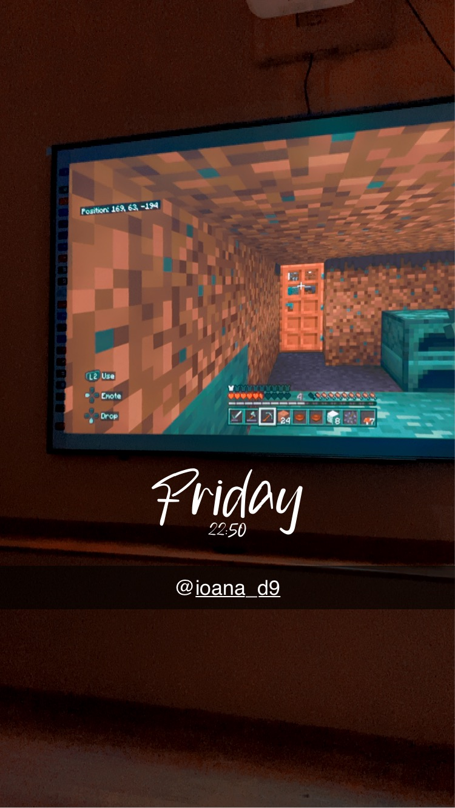

15 martie 2024
Căminul Andrei Mureșanu
💜 Te iubesc pentru că dai viață iubirii noastre prin simplitatea ta 💜
Suntem ființe complexe, într-o lume haotică, într-un univers vast. Tot ceea ce înseamnă viața este prin definiție complex. Cred ca din cauza asta căutăm
involuntar complexitate în ceea ce facem. Dar câteodată momentele simple sunt cele mai prețioase. Daca stau sa analizez, cele mai frumoase momente alaturi de tine
sunt cele mai simple. Mereu m-a fascinat fericirea ta din simplul timp petrecut impreuna. Iti multumesc, pentru ca mi-ai oferit linistea pe care multi baieti nu o
au: orice s-ar intampla, simpla prezenta reciproca este cea care o sa ne implineasca sufletele.